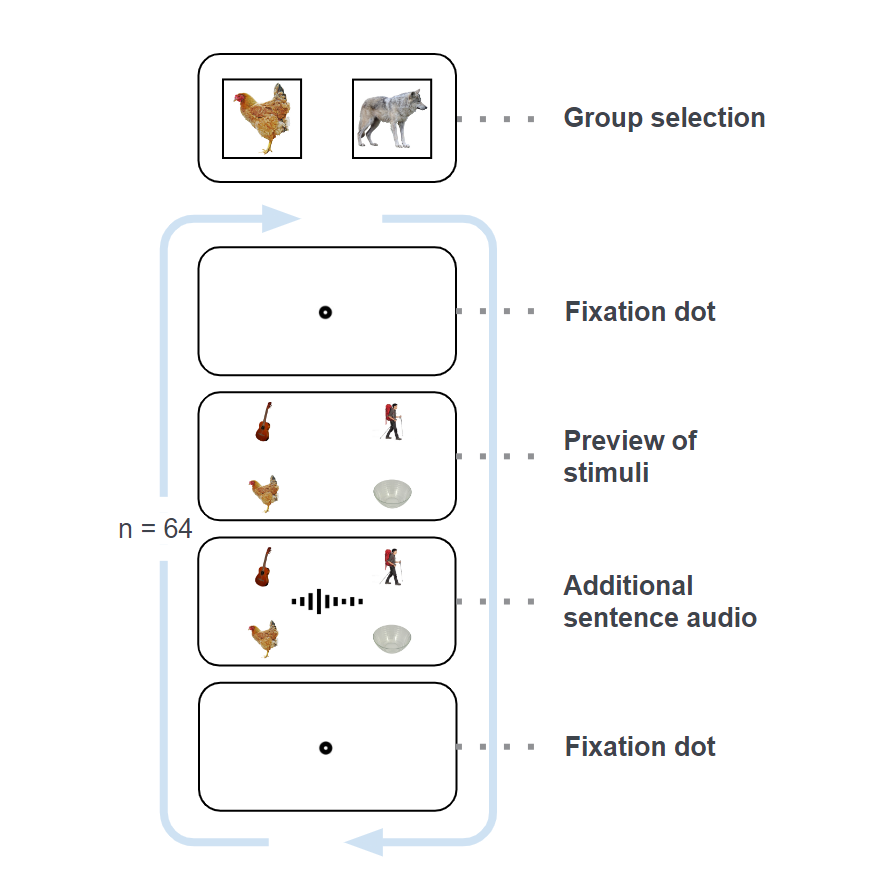
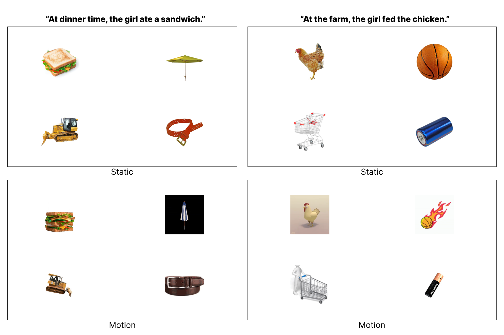

1 Introduction
The Visual World Paradigm (VWP) is an established method in psycholinguistics that involves tracking eye movements to study how individuals process spoken language while viewing visual scenes. It allows researchers to understand how linguistic information influences attention and gaze behavior in real-time. As part of the course “Acquisition and Analysis of Eye-Tracking Data” we implemented the VWP in an experiment with a subsequent data analysis. In this report we provide details to allow reproducibility of the experiment, discuss our study design choices and present our results.
1.1 Background
The role of language and visual processing has been studied by many researchers using eye tracking in the visual world paradigm (VWP). VWP is a useful eye-tracking technique which consists of visual scenes that a participant views while listening to some spoken utterances. Participants look at the visual display which contains pictures of objects, meanwhile, the eye tracker monitors the eye movements as the heard language unfolds over time. The spoken utterance can extend from a single word to short narrative or even a story, and the utterance can be related to more than one object. When the eye movement of a saccade (a quick change of gaze moves from one point of fixation to another) happens, the eye tracker yields a time estimation at which word and corresponding picture has been identified on the visual scene while listening to the utterance. In this respect, VWP examines the relationship between the visual stimuli and language input, which also offers a different insight of exploring the integration of visual and language processing happening in the brain (Huettig at al, 2011 & Berends et al, 2016).
How people interpret and process spoken language in the context of their contemporary visual field and how eye movements are involved as the language is being processed were first demonstrated experimentally by Cooper (1974). However, the vast majority of researchers have not considered the effects of Cooper’s study, and there is a relatively small body of literature that is concerned with the language processing and eye movements.
After a few decades, since Tanenhaus et al. (1995) introduced the influential study of VWP in real-time spoken language comprehension, the rapid development of VWP started to flourish in the field, additionally with the contemporary high quality eye-trackers, VWP also has a transformative influence in psycholinguistics (Clifton et al, 2007).
A key study by Altmann and Kamide (1999) demonstrated that anticipatory eye movements could be predicted based on the verb used in a sentence. For example, upon hearing a verb like “eat,” participants’ gaze would quickly shift to an edible object in the scene before the object itself was mentioned, indicating that verb meaning constrains visual attention.
This ability to predict upcoming referents based on verb semantics highlights the close interaction between language processing and visual attention, providing crucial insights into how language guides our interpretation of the visual world. The original Altmann & Kamide (1999) study used static images, focusing on how specific verbs direct gaze towards the most semantically appropriate object among a set of alternatives.
1.2 Motivation
We want to build on top of the foundational work of Altmann & Kamide (1999), by aiming to explore how dynamic visual stimuli might affect anticipatory eye movements within the VWP. Given that motion is a powerful cue in guiding visual attention, this study introduces video stimuli to examine whether the presence of motion has an effect on the predictive gaze patterns observed with static images.
The introduction of motion provides a new dimension to understanding the interaction between linguistic information and visual attention. While previous studies have shown that static images paired with predictive verbs can direct gaze, it remains unclear how motion in the visual scene impacts this process.
1.3 Research Question / Hypothesis
Building upon the results of Altmann & Kamide (1999), which suggested that sentence processing is driven by predictive relationships between verbs and objects, our study aims to extend this understanding by introducing moving stimuli into the experimental setup. Specifically, we propose our research question:
Do people still make anticipatory eye movements when presented with images that are in motion instead of static ones?
This question is grounded in the idea that while humans are naturally inclined to focus on moving objects (TODO: Find References here), the extent to which this influences the predictive power of verbs during sentence processing remains unknown. We hypothesize that the addition of motion might modulate the anticipatory eye movements either by introducing competing visual stimuli that might disrupt the prediction.
2 Experiment
In this chapter we go over the methodology details of our experiment. We are interested in comparing the gaze behavior of the participants when they are presented with static or moving images accompanied by a related audible sentence. This was done by collecting gaze data and analyzing the gaze behavior of the participants (Section 3).
2.1 Participants
We had 10 people participating in our experiment between the ages 18 and 34 where nine people identified as male and one as female. Regarding their English level, most (6) people specified that they have reached at least a C1 level and the remaining (4) people were at a B2 level. Additionally, we asked the participants about their previous experience with eye-tracking. For the majority (7) it was the first time using eye-trackers, the other three stated that they have used eye-trackers before.
Overall, all the participants were able to complete the experiment successfully without significant complications.
2.2 Study Design
We have a between-subject study design with one factor being the visual stimuli type. The factor has two possible levels, with one being static and the other in motion. The participants are exposed to all 64 audio stimuli, but whether the corresponding visual stimuli is static or in motion depends on their condition group, which was determined by their randomly assigned participant ID. For instance, if for stimuli nr. 5 the visual was static for condition group “Chicken”, the stimuli type was simply flipped for the other condition group “Wolf”. With this latin square design, we made sure that the stimuli/condition mappings were equally distributed among both condition groups, as long as the amount of participants in the groups were the same. The order of the stimuli overall was random for each participant by utilizing the random order function within OpenSesame. In summary, we have 64 audio stimuli with two possible matching visual stimuli. The participants were shown 32 visual stimuli for each category, which was determined by their randomly assigned condition group. Each trial started with a fixation dot for one second, followed by a preview of the four images for another second. Then, the audio started playing and the images were still shown 500 miliseconds after audio completion, after which the experiment switched back to the fixation dot and the trial was completed. The participant is then able to proceed to the next trial by looking at the fixation dot. A visualization of the trial sequence is shown in figure .
2.3 Materials & Stimuli
We have 64 audio stimuli in total with two matching visual stimuli versions, one consisting of four regular images and the other with four GIFs. The audio stimuli consisted of different sentences with the same structure: [location/time], [person] [verb] [object], e.g.: “At breakfast, the girl ate a croissant.” The corresponding visual stimuli consists of four images with only one being closely related to the sentence. In the case of our example we have one image being a croissant and the remaining images being random inedible objects that are not related to breakfast. For the motion stimuli, we just picked out matching GIFs for the four static images. It was important, that the gives had the same speed. The exact specifications for static and motion stimuli as well as the audio stimuli can be found in the README-File of the experiment.
We came up with the 64 different sentences by following the described structure and created corresponding audios with a free text-to-speech tool1. For the visual stimuli we re-used most of the images from the visual world paradigm tutorial by OpenSesame 2 and looked for additional ones using Google images.
The stimuli creation process turned out to be a cumbersome process with handling the text-to-speech tool to include breaks and not speak too fast, finding visual stimuli to go with the audios and making sure that there is only one matching target sub-stimuli for each sentence. With our amount of stimuli, it is easy to lose sight of all the different sub-images. Therefore, to make the stimuli creation process easier, we used a central excel sheet as documentation where all the sentences and their corresponding sub-stimuli file names were stated, including which stimuli version (static or motion) will be shown for each condition group. In case something changed, we only had to change the central document and paste its contents to our trial loop in OpenSesame. In the following we provide some stimuli examples: 
2.4 Study Procedure and Apparatus
To test our hypothesis, we needed to invite participants to partake in our experiment.
We recruited participants by asking for volunteers in our circle of acquaintances and invited the interested people between mid-July and August. Our target sample size was at least ten participants to end up with at least five people per condition group. Once a participant arrived, they were given an information sheet with a brief description of the experiment, what kind of devices are going to get used and their corresponding safety risks. Additionally, they were asked to sign a standard consent form for studies with humans that are conducted at the university. To counterbalance the number of participants per condition group, we made them pick a card with a unique number between 1-10 and depending on whether the ID was an odd number or not, they got assigned to the corresponding condition group. The participants were asked to make themselves comfortable on the chair and adjust it accordingly to their preference, the same goes for the standard chin rest we used. Both the chair and the chin rest were disinfected before each participant arrived. To execute the experiment, we used a standard desktop PC with two displays standing back-to-back in duplicate view, where one was directed to the participant and the other was used by the study conductor to start and supervise the experiment. For tracking, we used the stationary GazePoint GP3 HD eye-tracker in 150 Hz mode. When starting the experiment in OpenSesame, it starts out with initializing the eye-tracker and calibrating. The calibration process sometimes took multiple attempts until the results looked precise and accurate enough. We always told the participants that the calibration process can require multiple attempts to make sure they dont feel like they are doing something wrong. After the setup, the experiment itself lasted around 12 to 15 minutes. The participants had the control to proceed to the next trial in their own speed and they were informed, that they can take breaks in-between trials, if needed. Finally, we asked the participants some basic demographic information and their previous experiences with eye-tracking. We placed the demographic survey at the end of the experiment to avoid stereotype threat (see Spencer, Logel, and Davies (2016)).
2.5 Implementation
The experiment was conducted using the most recent version of OpenSesame 4.0 Melodramatic Milgram with the PyGame backend. The logic is divided into three distinct logical units.
In the first unit is used to load custom configuration and preprocess static and motion stimuli. The config-file was managed with the YAML parser and emitter PyYAML 3 and used to customize texts, their layouts and positions, fixation dots, positions of stimuli as well as the general timing of the expermient. This way we kept the experiment flexible for minor changes during the pilot studies or possible future research. Since it was not possible to display videos or gifs in OpenSesame, we used the Python library OpenCV 4 to extract the frames of each mp4-Videofile and save them into a separate folder for each stimulus inside a temporary directory. This directory can be specified in the custom config File, stated above.
In the second unit of the experiment, the built-in calibration of OpenSesame was used to calibrate the eye-tracker and the group selection was displayed to the user.
The third unit consists of the trial loop. For each trial, the user is first shown a fixation dot, then the four substimuli and afterwards the sentence to the pictures is played as stated in Section 2.4. The trial was designed in such a way that it would only commence once the user had fixated on the central fixation dot. In order to maintain a consistent framerate for each motion stimulus, all the images were placed into an infinite loop, with each sub-stimulus containing an individual frame counter. This counter was reset to the beginning once it reached the final frame. Any concerns regarding the performance of the expriment could be cleared after extensive piloting. Once the designated sentence was played, the infinite loop was interrupted and the pause screen was displayed. The logging took place multiple times during the trial loop and finally logged with the OpenSesame logger. The logging will be discussed in Section 3.1.
3 Analysis Methods
This chapter shows how data was gathered, preprocessed and analyzed in order to answer the research question. The analysis was performed in Python 3.12.4 5 with the use of the libraries Pandas 6 and NumPy 7 for data manipulation and analysis as well as Matplotlib 8 and Seaborn 9 for visualisations. The resulting scripts are Jupyter Notebooks and a Python script that depending on the filename can be run for a single subject (e.g. analysis-subjects.ipynb) or for all the subjects (e.g. analysis-global.ipynb).
3.1 Gathering data / logging
In order to calibrate, record and log the gaze data in OpenSesame, we used several built-in pygaze elements. I.e. the the pygaze_init element befor the trial loop in order to perform the calibration. Pygaze_start_recording at the beginning of a trial followed by a logger and a pygaze_stop_recording at the end of a trial.
It is essential to record the occurence of specific events during the experiment, as these will be subject to subsequent analysis. This is achieved by custom logging with the logger item in OpenSesame. The structure of a custom log is always consistent. It comprises a string containing all the information from the current row in the stimuli table. The string is formated so that each cell of the row is logged as key-value pair and divided by a semicolon.
VAR TRIAL_LOG VERB_CUE=EAT;GROUP=CHICKEN;SENTENCE_ID=11; SENTENCE=AT THE FARM, THE GIRL FED THE CHICKEN. ; (…)
In order to facilitate the differentiation of the current event, a key-value pair is appended to the logstring. Four potential events are logged within the experiment, as follows:
- Fixation: This event is logged at the beginning of a trial, when the participant is presented the fixation dot on the screen.
- Preview: Stimuli are presented.
- Audiostart: The audio with the sentence starts playing.
- Pause: The beginning of the pause, where the user has to look at the fixation dot in oder to continue.
The subsequent analysis contains two more events which could not be logged in OpenSesame due to its design. Our solution to this problem will be presented in the next chapter.
3.2 Preprocessing and quality control
At the beginning, we filtered out the data that was irrelevant for this research. The dropped columns can be seen in Figure 1:
Code
# (...) read data as pandas.DataFrame
# drop irrelevant data
data = data.drop(["TIME_TICK"], axis=1)
data = data.drop(["FPOGX", "FPOGY", "FPOGS", "FPOGD", "FPOGID", "FPOGV"], axis=1)
data = data.drop(["LPOGX", "LPOGY", "LPOGV", "RPOGX", "RPOGY", "RPOGV"], axis=1)
data = data.drop(["LPCX", "LPCY", "LPD", "LPS", "LPV", "RPCX", "RPCY", "RPD", "RPS", "RPV"], axis=1)
data = data.drop(["LEYEX", "LEYEY", "LEYEZ", "LPUPILD", "LPUPILV", "REYEX", "REYEY", "REYEZ", "RPUPILD", "RPUPILV"], axis=1)
data = data.drop(["CX", "CY", "CS"], axis=1)The resulting Dataframe looks like this:
| TIME | BPOGX | BPOGY | BPOGV | USER |
|---|---|---|---|---|
| 204.69383 | 0.33433 | 0.57871 | 1 | START_TRIAL 0 |
Resulting data and its interpretation can be found in the GazePoint API documentation 10 and forms the basis for the analysis.
At the beginning several sanity checks were performed in order to evaluate the quality of the collected data. The first one being the examination on recorded logs. Therefor the occurencies of all existing logs in the USER column were counted. Since the experiment has 64 trials there should be 64 hits for each log message except the TRIAL_WARNING that is only logged when the subject does not fixate on the fixation dot during a pause for more than 15 seconds. Afterwards the results are plotted in a barplot (see Figure 2 and Figure 3).
Code
# finds the occurencies of "word" in data
def find_occur(data, word):
all_text = " ".join(data["USER"].astype(str).values.flatten())
total_count = all_text.count(word)
return total_count
# (...)
# index
log_index = ["START_TRIAL", "EVENT=FIXATION", "EVENT=PREVIEW", "EVENT=AUDIOSTART", "EVENT=PAUSE", "STOP_TRIAL", "TRIAL_WARNING"]
ind = np.arange(len(log_index))
# count occurencies of each word
count = []
for log in log_index:
count.append(find_occur(data, log))
# load data into dataframe
logs = pd.DataFrame({"count": count, "expected": expected_logs}, index=log_index)
# (...) plot dataBy plotting a histogram of the time delta between samples, we found out, that it is not consistent. Therefor we interpolated the values of BPOGX, BPOGY, and BPOGV with the scipy 11 linear (one dimensional) interpolator (see Figure 4). The time was reorganized so that it matches the sampling rate. Since the eye tracker has a sampling rate of 150hz, the total time of the experiment in seconds was multiplyed by 150 to figure out the amount of bins for the interpolation function. The respective values for BPOGX, BPOGY and BPOGY at the location of each bin determined the interpolated value. In order to obtain a valid BPOGV, its value after interpolation was rounded to an integer value. In order to have a correct logging, the events were mapped back to the nearest interpolated time.
Code
# (...)
# interpolate BPOGX and BPOGY
interp_func_x = interp1d(data["TIME"], data["BPOGX"], kind="linear", fill_value="interpolate")
interp_func_y = interp1d(data["TIME"], data["BPOGY"], kind="linear", fill_value="interpolate")
interp_func_v = interp1d(data["TIME"], data["BPOGV"], kind="linear", fill_value="interpolate")
# generate new evenly spaced time points
t_delta = data["TIME"].max() - data["TIME"].min()
lin_num = (t_delta * sample_rate).round(0).astype(int)
new_time = np.linspace(data["TIME"].min(), data["TIME"].max(), num=lin_num)
# get interpolated values with new time
new_bpogx = interp_func_x(new_time)
new_bpogy = interp_func_y(new_time)
new_bpogv = interp_func_v(new_time)
# overwrite original dataframe and round like original data
data = pd.DataFrame({})
data["TIME"] = new_time
data["BPOGX"] = new_bpogx.astype(float)
data["BPOGY"] = new_bpogy.astype(float)
data["BPOGV"] = new_bpogv.round(0).astype(int)
def find_nearest_index(array, value):
idx = (np.abs(array - value)).argmin()
return idx
# map user events back to correct time
for index, row in before_interpol_data.iterrows():
if pd.notna(row["USER"]): # Check if USER event is present
nearest_index = find_nearest_index(new_time, row["TIME"])
# Add or append the event to the USER column
data.at[nearest_index, "USER"] = row["USER"]Figure Figure 5 shows an example function before and after interpolation:
In the next step the custom logs were decoded. In this process, the rows of the dataframe containing a TRIAL_LOG in the USER column were filtered and the logsting was decoded. Therefore all key-value pairs were split and for each key a new column was created. The respective value was placed in the current row of the key-column. Afterwards, the USER column was dropped. A row that contained a log looks for example like that:
| TIME | (…) | BPOGV | SUBJECT | EVENT | TRIAL | GROUP | (…) | VERB_CUE | TARGET_CUE_TIMING | |
|---|---|---|---|---|---|---|---|---|---|---|
| 1487.3… | (…) | 1 | 3 | FIXATION | 0 | WOLF | (…) | SERVED | 2115 |
Code
for index, row in data.iterrows():
# add subject to every row
data.at[index, "SUBJECT"] = subject_no
# get loggin row of opengaze data
inp = str(row["USER"])
if inp.find("TRIAL_LOG") != -1:
cleaned_inp = inp.split("VAR TRIAL_LOG ", maxsplit=2)[1]
kv_inp = cleaned_inp.split(";")
# decode key/value-pairs and copy them to column (key) and value (cell)
for elem in kv_inp:
key, val = elem.split("=", maxsplit=1)
data.at[index, key] = val
# other custom logs
elif inp.find("TRIAL_WARNING") != -1:
data.at[index, "EVENT"] = "WARNING"
elif inp.find("START_TRIAL") != -1:
data.at[index, "EVENT"] = "START_TRIAL"
data.at[index, "TRIAL"] = int(inp[11:].replace(" ", ""))
elif inp.find("STOP_TRIAL") != -1:
data.at[index, "EVENT"] = "STOP_TRIAL"
data.at[index, "TRIAL"] = int(inp[11:].replace(" ", ""))
# drop original log column
data.drop(columns=["USER"], inplace=True)As mentioned in Section 3.1, two events can not be logged due to the design of OpenSesame. These events are VERBONSET and TARGETONSET. VERBONSET refers to the time, when the sentence is played to the subject and the verb of the sentence is said. TARGETONSET is the exact timing where the target word of the sentence is spoken. The in Section 2.3 introduced stimuli-table 12 also contains for each sentence the audio and the time that has passed until the verb and the target word is said. We consider this two time intervals as deltas. Afterwards we took the time were the AUDIOSTART event happened and added each time interval to the AUDIOSTART-time. The resulting times are the values VERB- and TARGETONSET. Figure 7 illustrates this process.
Code
# extend logs with the corresponding events
audio_start_data = data.query("EVENT=='AUDIOSTART'")
print(len(audio_start_data))
for index, row in audio_start_data.iterrows():
sample_time = float(row["TIME"])
delta_verb_onset = float(row["VERB_CUE_TIMING"])/1000
delta_target_onset = float(row["TARGET_CUE_TIMING"])/1000
time_verb_onset = sample_time + delta_verb_onset
time_target_onset = sample_time + delta_target_onset
first_sample_verb = data[data["TIME"] >= time_verb_onset].iloc[0].name
first_sample_target = data[data["TIME"] >= time_target_onset].iloc[0].name
for field in fields_to_copy:
data.at[first_sample_verb, field] = row[field]
data.at[first_sample_target, field] = row[field]
# Set the EVENT to "VERBONSET"
data.at[first_sample_verb, "EVENT"] = "VERBONSET"
data.at[first_sample_target, "EVENT"] = "TARGETONSET"In order to work better with pandas queries, the logs were expanded. That means, that we iterate over all custom logs that were added during this process so far and copy them to the next empty row. If the next row is not empty, the data of the next row gets copied to the next but one row. This process looks like the following:
1: 1 | 3 | FIXATION | 0 | WOLF | (...) | SERVED | 2115 |
2: <- custom logs of row 1 are copied here
3: <- custom logs of row 1 are copied here
5: 1 | 3 | PREVIEW | 0 | WOLF | (...) | SERVED | 2115 |
6: <- custom logs of row 5 are copied here
7: <- (...)Code
# make sure event gets copyied as well
if "EVENT" not in fields_to_copy:
fields_to_copy.append("EVENT")
found_first_evt = False
for index, row in data.iterrows():
# skip first samples with NaN
if "START_TRIAL" in str(data.at[index, "EVENT"]):
found_first_evt = True
continue
if not found_first_evt:
continue
# copy last log if custom log cells are NaN
if pd.isna(data.at[index, "EVENT"]):
for field in fields_to_copy:
data.at[index, field] = data.at[index-1, field]Finally the format of rows that contained mixed characters was unified and the resulting dataframe as exported into a csv file under the ~/data/preprocessed/ directory.
Code
data["SUBJECT"] = data["SUBJECT"].fillna(0).astype(int)
data["TRIAL"] = data["TRIAL"].fillna(0).astype(int)
data["SENTENCE_ID"] = data["SENTENCE_ID"].fillna(0).astype(int)This concludes the Section 3.2 chapter. The full script for the preprocessing is enclosed in the form of a Jupyter notebook and can be found in the project path ~/scripts/preprocess-subject.ipynb.
3.3 Measurements, Metrics and Visualisations
To verify the correctness, consistency and accuracy of the data collected, especially during the piloting trials, several visualizations were employed. The first one being visualization of the BPOGX and BPOGY coordinates was generated (see Fig. Figure 11). This plot illustrated the raw gaze points captured by the eye tracker across the screen.
The scanpath visualization (see Figure 12) was used to trace the path that a subjects eye-movements took to ensure alignment with the expected gaze patterns. The heatmaps (see Figure 13) allowed quick verification of attention directed towards the defined areas of interest (AOI).
To determine whether a participant directed their gaze toward a target, two primary types of eye movements can be looked at: fixations and saccades.
When considering saccades, several variations of this metric might be interesting to see if the anticipation effect persist when adding motion stimuli. An example therefore would be the first saccade after the target word of a sentence is said. However, the inclusion of such a metric requires precise experimental timing and raises several methodological questions. For example, how should saccades that initiate immediately after the target cue be handled? Overall, saccades are not sufficiently robust for this analysis and introduce a lot of noise, making them impractical within the scope of this project.
Conversely, fixations provide a more straightforward metric. In this study, we are not interested in the duration of fixations or the precise location of the gaze point. Instead, the primary focus is on determining whether the participant is looking at a specific target. Given this requirement, we chose not to analyze fixations directly. Instead, we opted to use the samples from the eye tracker. These samples are more robust and less noisy since they do not need to undergo a fixation detection algorithm, which can create additional noise.
Given the need to accurately detect the specific sub-stimulus at which a participant is looking, four areas of interest were defined. These AOIs correspond to the locations of each sub-stimulus and are slightly larger (350 pixels) than the resolution of each sub-stimulus (300 pixels). This setup results in four AOIs: top-left (TL), top-right (TR), bottom-left (BL), and bottom-right (BR). The center of each AOI corresponds to the relative position of each sub-stimulus to the middle. For example the center top-left AOI is 1/4 of the width and 1/4 of the height. An algorithm was implemented that considers the center positions and calculate two intervals where the BPOGX and BPOGY of a sample need to be located in order to be considered inside the bounding box (see Figure 14). Since our metrics base on the AOIs, the algorithm was tested with additional visualisations (see Figure 15) and could be used in the further course of the analysis.
Code
# function that checks wheather subject looked at desired area of interest
def bpog_in_target_bbox(bpogx, bpogy, pos):
# var "width" and "height" are globally (static) definded
x = bpogx * width
y = bpogy * height
if pos == "TL":
relpos = (width/4, height/4)
elif pos == "TR":
relpos = (width*(3/4), height/4)
elif pos == "BL":
relpos = (width/4, height*(3/4))
elif pos == "BR":
relpos = (width*(3/4), height*(3/4))
else:
relpos = -1
# add/rest 150 + 50 to relative position
pos_x_l = relpos[0] - 200
pos_x_r = relpos[0] + 200
pos_y_d = relpos[1] - 200
pos_y_u = relpos[1] + 200
# check if in area of interest box
if (x > pos_x_l) and (x < pos_x_r):
if(y > pos_y_d) and (y < pos_y_u):
return True
return FalseWith the area of interest fixation algorthmen, we can now have a look at the two metrics of this experiment. The target ratio and the non-target ratio. The target ratio describes the samples that were detected inside the target area of interest in relation to the total amount of examples. The non-target ratio describes the samples that were detected in all other areas of interest except the target aoi in relation to the total samples.
\[ TR = \frac{Samples on target AOI}{Total samples} \] \[ NTR = \frac{Samples on non-target AOIs}{Total samples} \]
With this two introduced metrics, a variety of interesting analysis and visualisations is possible. The target and non-target ratio can be looked at for an individual subject and sentence with a specific condition (see Figure 16).
Another interesting insight is the average tr and ntr over all subjects for one sentence (see Figure 17).
Our goal is to compare the target and non-target ratio for sentences and stimuli with the static condition with the sentences and stimuli with the motion condition. For each subject the target and non-target ratio for all sentences with the static tr(static) and motion condition tr(motion) is calculated. With the resulting metrics for each subjects, the average, mean, standard deviation is calculated and visuaized in a boxplot.
The scripts to calculate all metrics mentioned above can be found in the project folder under ~/scripts/.
4 Results
TODO
5 Discussion
Discussion
1- paragraph Summary
How do the findings relate to the literature?
Limitations
Unlike the previously referenced work, we did not conduct the study with native speakers of the English language.
Challenges during project
5.1 Outlook/ improvements / Lessons learned
We observed some of our participants getting bored during the experiment, either they told us or they started fidgeting more during the trials seeming impatient. This indicates that we should plan a short break halfway through the trials, since the participants might not feel the need to speak up about needing a short break.
6 Contribution Table
The following table gives a detailed insight on how the workload of this project was split between the group members:
| Task | Yanhong | Dilara | Karl Jorge |
|---|---|---|---|
| Background Literature | x | o | |
| Experiment Design | x | ||
| Experiment Implementation | x | ||
| Stimulus and audio design | x | ||
| Piloting | x | x | x |
| Pilot plots | x | x | |
| Data-Recording | o | x | x |
| Data Analysis Scripts | x | ||
| Report Writing | x | x | o |
| Report Lectorate | x | ||
| Participant Acquisition | x | x | x |
| Project Management | x |
Legend: x = main, o = supporter
References
Footnotes
https://www.acoust.io/↩︎
https://osdoc.cogsci.nl/3.3/tutorials/visual-world/↩︎
https://pypi.org/project/PyYAML/↩︎
https://pypi.org/project/opencv-python/↩︎
https://www.python.org/downloads/release/python-3124/↩︎
https://pypi.org/project/pandas/↩︎
https://pypi.org/project/numpy/↩︎
https://pypi.org/project/matplotlib/↩︎
https://pypi.org/project/seaborn/↩︎
https://www.gazept.com/dl/Gazepoint_API_v2.0.pdf↩︎
https://pypi.org/project/scipy/↩︎
Can be found in the project folder under ~/stimuli/0-stimuli-table.xlsx↩︎